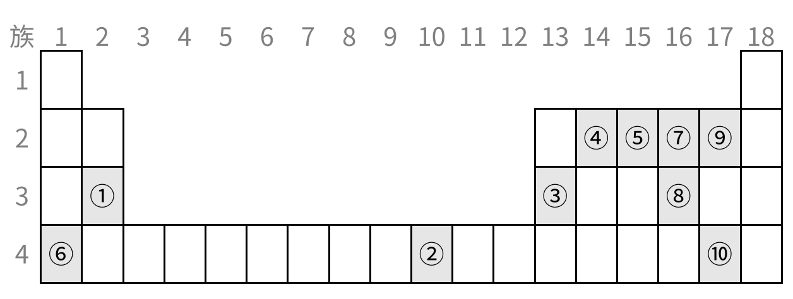
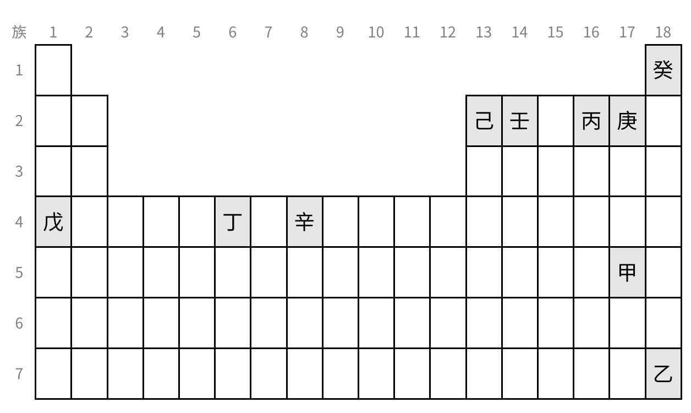
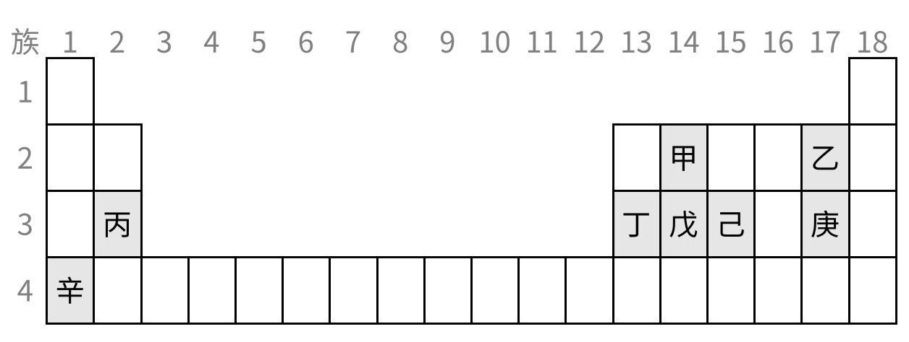
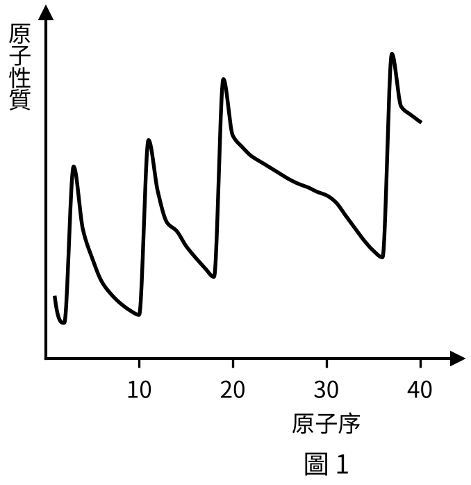

基礎題
下列有關週期表之敘述，哪一個是正確？
- (A) 第一至第四週期元素個數依次為 2，8，18，32 個
- (B) 典型元素的族數與其價電子數相同
- (C) 第 18 族在常溫常壓下均為氣體，化性不活潑，迄今尚無化合物製成
- (D) 在週期表中，同週期由左到右非金屬性增強
- (E) 類金屬的化學性質介於金屬與非金屬之間，所以列在週期表的中央，統稱為過渡元素
看答案與詳解
答案：(D)
(B) ✘ 13～17 族的價電子數為族數減 10
(C) ✘ 已製得 XeF2、XeF4 等鈍氣化合物
(D) ✔
(E) ✘ 類金屬位於金屬與非金屬交界的階梯線附近；過渡元素是 3～12 族
下列有關元素週期表的敘述，何者正確？
- (A) 鈍氣為第 18 族元素，均有 8 個價電子
- (B) 過渡元素均為金屬，有 1B～8B 共 8 個直行
- (C) 同週期元素的化學性質相似，但同族元素則差異很大
- (D) 鹼土族元素的反應性比鹼金族高
- (E) 砷為週期表中第 15 族的元素，價殼層為 N 層
看答案與詳解
答案：(E)
(B) ✘ 8B 含 3 行，共 10 個直行（3～12 族）
(C) ✘ 說反了，同族性質相似
(D) ✘ 鹼金族較活潑
(E) ✔ As 在第四週期 15 族，價殼層為第 4 層（N 層）
元素週期表被稱為「物質的世界地圖」，下列有關元素週期性質及週期表的敘述，何者正確？
- (A) 現行的週期表是依各元素之原子量從小到大的順序排列
- (B) 就導電性來分類，元素可分為金屬、類金屬及非金屬三大類
- (C) A 族元素全為金屬元素
- (D) 類金屬的化學性質介於金屬及非金屬之間，所以列在週期表中央，統稱為 B 族
- (E) B 族元素有金屬及非金屬元素
看答案與詳解
答案：(B)
(B) ✔
(C) ✘ A 族含 C、N、O、鹵素、鈍氣等非金屬
(D) ✘ 類金屬屬 A 族；B 族是過渡元素
(E) ✘ B 族全為金屬
下列有關元素與週期表的敘述，何者正確？
- (A) 週期表中橫排稱為族，共有 18 族
- (B) 同位素的中子數相同，所以化學反應性相同
- (C) 週期表中，原子序 4 和 12 的元素屬於同一族
- (D) 現今通用週期表與門得列夫的週期表相同
- (E) 主族元素和過渡元素皆有金屬與非金屬元素
看答案與詳解
答案：(C)
(B) ✘ 同位素中子數不同；化性相同是因電子數相同
(C) ✔ Be（2,2）與 Mg（2,8,2）同屬 2 族
(D) ✘ 門得列夫依原子量排列
(E) ✘ 過渡元素全是金屬
週期表中同週期的典型元素，當原子序增加，下列性質的變化何者正確？
- (A) 原子半徑變大
- (B) 金屬性增加
- (C) 核電荷對電子的吸引力增加
- (D) 氧化物溶於水的鹼性增加
- (E) 愈容易形成陽離子
看答案與詳解
答案：(C)
(A) ✘ (B) ✘ 金屬性減弱 (D) ✘ 酸性增加 (E) ✘ 愈容易形成陰離子
故選 (C)
同週期的元素（鈍氣除外），當原子序增加時，則下列何項正確？
- (A) 失去電子的傾向增加
- (B) 非金屬性質增加
- (C) 價電子數減少
- (D) 半徑變大
- (E) 金屬性質增加
看答案與詳解
答案：(B)
下列有關元素與週期表的敘述，何者正確？
- (A) 兩個水分子 1H−17O−1H 與 1H−16O−2H，彼此物理性質相同
- (B) Be、Mg、Ca 三種金屬元素中，Be 的原子半徑最小
- (C) 室溫時，第 18 族元素皆為雙原子分子
- (D) 週期表由上至下，金屬性漸減、非金屬性漸增
- (E) 週期表上非金屬元素的數量大於金屬元素的數量
看答案與詳解
答案：(B)
(B) ✔ 同族由上而下半徑變大：Be＜Mg＜Ca
(C) ✘ 鈍氣為單原子分子
(D) ✘ 由上至下金屬性漸增
(E) ✘ 金屬約占八成
關於週期表的敘述，以下敘述何者正確？
- (A) 任何金屬元素的氧化物在水中都會呈現鹼性
- (B) 目前所使用的週期表是門得列夫依照原子序排列
- (C) 週期表中非金屬元素佔大部分
- (D) 氧原子的原子序為 8，屬於 6A 族，也是第 15 族
- (E) 原子序 11 與原子序 19 的元素，彼此的化學性質相似
看答案與詳解
答案：(E)
(B) ✘ 門得列夫依原子量；依原子序的是莫斯利
(C) ✘ 金屬占大部分
(D) ✘ 6A 族即第 16 族
(E) ✔ Na、K 同為 1 族，價電子數相同
某元素的基態價電子組態為 5s25p5，此元素為何？
- (A) Br
- (B) I
- (C) Te
- (D) Xe
- (E) Sb
看答案與詳解
答案：(B)
故選 (B)
下列元素中，何者屬於週期表的 d 區？
- (A) Ca
- (B) Ga
- (C) Zn
- (D) Ge
- (E) Kr
看答案與詳解
答案：(C)
Zn：[Ar]3d104s2，屬 12 族 → d 區
Ca 為 s 區；Ga、Ge、Kr 為 p 區
故選 (C)
34Se 位於週期表的哪一個位置？
- (A) 第三週期第 16 族
- (B) 第四週期第 6 族
- (C) 第四週期第 16 族
- (D) 第四週期第 14 族
- (E) 第五週期第 16 族
看答案與詳解
答案：(C)
價電子 4s24p4 共 6 個，p 區 → 第 16 族
故選 (C)
下列哪位化學家依原子量由小而大排列成週期表，並在表中留出若干空位置，預言這些空位置是一些尚未發現的元素，且預言這些尚未發現元素的性質？
- (A) 門得列夫
- (B) 拉塞福
- (C) 莫斯利
- (D) 湯姆森
- (E) 密立根
看答案與詳解
答案：(A)
拉塞福：α 粒子散射、原子核；莫斯利：改以原子序排列；湯姆森：發現電子；密立根：油滴實驗
故選 (A)
具有下列原子序的元素何者為金屬元素？
- (A) 19
- (B) 17
- (C) 14
- (D) 10
- (E) 5
看答案與詳解
答案：(A)
故選 (A)
下列何者屬於類金屬？
- (A) Tl
- (B) Br
- (C) Si
- (D) Cu
看答案與詳解
答案：(C)
(A) Tl 為 13 族金屬 (B) Br 非金屬 (D) Cu 過渡金屬
故選 (C)
下列各數字代表元素的原子序，請問下列何者組合的元素具有相似的化學性質？
- (A) 3，12，17
- (B) 4，12，20
- (C) 1，9，17
- (D) 5，6，7
- (E) 1，2，10
看答案與詳解
答案：(B)
(B) ✔ Be、Mg、Ca 同為 2 族
(A) Li、Mg、Cl (C) H 不屬於鹵素 (D) B、C、N 同週期 (E) H、He、Ne
關於價電子數為 1 個的主族金屬元素之相關敘述，何者錯誤？
- (A) 依據 IUPAC 分類，屬於 1A 族或第 1 族
- (B) 又稱為鹼金屬
- (C) 導電度隨溫度升高而降低
- (D) 活性大，置於空氣中易形成酸性氧化物
- (E) 易失去最外層電子，形成＋1 價陽離子
看答案與詳解
答案：(D)
其餘正確
下列元素中，哪些是過渡元素？（多選）
- (A) Ca
- (B) Fe
- (C) Cl
- (D) Ag
- (E) Kr
看答案與詳解
答案：(B)(D)
(A) ✘ Ca 為 2 族
(B) ✔ Fe 為 8 族
(C) ✘ Cl 為 17 族
(D) ✔ Ag 為 11 族
(E) ✘ Kr 為 18 族
進階題
原子的大小與原子的化學性質息息相關，如得失電子的傾向、金屬性與非金屬性、形成化學鍵時之鍵強…等。因此了解原子半徑大小是學習化學時基本且必要的。若 (甲) H＜Li＜Na＜K；(乙) Li＜Be＜B；(丙) F＜Cl＜S；(丁) Ga＜Si＜S。以上原子半徑大小排序正確的有哪些？
- (A) 僅甲
- (B) 甲丙
- (C) 甲乙丙
- (D) 甲丙丁
- (E) 乙丁
看答案與詳解
答案：(B)
甲 ✔ 同族往下變大
乙 ✘ 同週期往右變小，應為 Li＞Be＞B
丙 ✔ F＜Cl（同族），Cl＜S（同週期）
丁 ✘ Ga 在第四週期且偏左，最大
故選 (B)
附圖是元素週期表的一部分，有關圖中所示①～⑩，下列敘述何者正確？

- (A) 金屬性最強者為①
- (B) 屬於類金屬者為②
- (C) 常溫下為液態的非金屬元素為⑩
- (D) 價電子數最少者為①
- (E) 常溫下為氣態的元素有④⑤⑦⑧⑨
看答案與詳解
答案：(C)
(A) ✘ 金屬性最強為⑥ K
(B) ✘ Ni 為過渡金屬
(C) ✔ Br 是常溫下唯一的液態非金屬
(D) ✘ K 只有 1 個價電子
(E) ✘ C、S 為固體
同週期的主族元素，由左而右原子半徑逐漸變小，主要原因為何？
- (A) 電子殼層數增加
- (B) 原子核對價電子的吸引力增強（有效核電荷增加）
- (C) 中子數增加
- (D) 價電子數減少
- (E) 原子量變大
看答案與詳解
答案：(B)
故選 (B)
某元素位於週期表第四週期第 13 族，其基態價電子組態為何？
- (A) 3s23p1
- (B) 4s24p1
- (C) 4s23d1
- (D) 4s24p3
- (E) 3d104s2
看答案與詳解
答案：(B)
(C) 為 3 族的 Sc
故選 (B)
第六週期依序填入 6s、4f、5d、6p 軌域，則第六週期共有幾種元素？
- (A) 8
- (B) 18
- (C) 24
- (D) 32
- (E) 50
看答案與詳解
答案：(D)
故選 (D)
附圖為元素週期表，有關元素特性的描述，下列何者錯誤？

- (A) 原子半徑大小：己＞壬＞丙＞庚
- (B) 主族元素中，在同一週期的元素之原子序增加，價電子數亦增加
- (C) 非金屬性最強的元素為乙
- (D) 戊易失去一個電子
- (E) 最不活潑的元素為癸
看答案與詳解
答案：(C)
(A) ✔ 同週期往右變小：B＞C＞O＞F
(B) ✔
(C) ✘ 乙在 18 族；非金屬性最強的是庚（F）
(D) ✔ K 易失去 1 個電子
(E) ✔ He 最不活潑
Na+、Mg2+、Al3+、F−、O2− 五種粒子中，半徑最大者為何？
- (A) Na+
- (B) Mg2+
- (C) Al3+
- (D) F−
- (E) O2−
看答案與詳解
答案：(E)
核電荷：O（8）最小 → O2− 最大
故選 (E)
下列有關週期表的特性之敘述，何者正確？（應選 2 項）（多選）
- (A) 同一週期元素的金屬性由左至右增加
- (B) 左邊的同族金屬元素，失去電子能力隨原子序之增加而增加
- (C) 左邊的同族金屬元素，活性隨原子序之增加而增加
- (D) 右邊的同族非金屬元素，活性隨原子序之增加而增加
- (E) 同一週期，原子半徑隨原子序之增加而增加
看答案與詳解
答案：(B)(C)
(B)(C) ✔ 同族金屬由上而下半徑變大，價電子較易失去，活性增大
(D) ✘ 鹵素由上而下活性減小（F2＞Cl2＞Br2＞I2）
(E) ✘ 半徑減小
附圖為元素週期表的一部分，有關元素性質敘述，下列何者正確？（多選）

- (A) 原子半徑：己＞戊
- (B) 原子半徑：庚＞乙
- (C) 戊的導電性介於金屬與非金屬之間，屬於半導體元素
- (D) 甲元素為非金屬，不具導電性
- (E) 庚元素可用於消毒自來水
看答案與詳解
答案：(B)(C)(E)
(A) ✘ 同週期往右變小：Si＞P
(B) ✔ 同族往下變大：Cl＞F
(C) ✔ Si 為類金屬、半導體
(D) ✘ 石墨可導電
(E) ✔ Cl2 用於自來水消毒
下列各組原子或離子的半徑比較，哪些正確？（多選）
- (A) Na+＜Na
- (B) Cl−＞Cl
- (C) Fe3+＞Fe2+
- (D) K+＞Ca2+
- (E) S2−＜Cl−
看答案與詳解
答案：(A)(B)(D)
(B) ✔ 陰離子比原子大（電子增加、斥力變大）
(C) ✘ 電子愈少半徑愈小：Fe3+＜Fe2+
(D) ✔ 等電子粒子，核電荷愈大半徑愈小：K+（19）＞Ca2+（20）
(E) ✘ 等電子：S2−（16）＞Cl−（17）
甲、乙、丙三元素在週期表的位置相接鄰而且均在前三週期，其中有一元素與另一元素同週期，同時又與第三元素同族，已知該三元素的原子序為甲小於乙，乙小於丙，若試設甲的原子序為 Z，其最外層的電子數為 n，而該三元素的原子序總和是該三元素的各原子最外層電子數總和的 6 倍加 2，試問下列選項中哪些為正確的選項？（多選）
- (A) 甲乙丙為金屬
- (B) 甲乙丙為非金屬
- (C) 甲乙丙的原子半徑大小為乙＞丙＞甲
- (D) 乙丙為同族元素
- (E) 甲乙為同週期元素
看答案與詳解
答案：(A)(C)
原子序 Z、Z＋8、Z＋9，價電子 n、n、n＋1 → 3Z＋17＝6(3n＋1)＋2 → Z＝6n－3，n＝1 得 Z＝3
甲 Li、乙 Na、丙 Mg（驗算 3＋11＋12＝26＝6×4＋2）
(A) ✔ 三者皆為金屬
(B) ✘
(C) ✔ Na＞Mg（同週期），Mg＞Li（多一層）
(D) ✘ 乙丙同週期
(E) ✘ 甲乙同族
回答下列原子半徑的問題：
(1) 同一族元素：原子半徑由上而下＿＿＿＿（增加或減少）。
(2) 承(1)，請解釋原因。
(3) 同一週期元素：原子半徑由左至右＿＿＿＿（增加或減少）。
(4) 承(3)，請解釋原因。
看答案與詳解
答案：(1) 增加 (2) 由上而下電子殼層數增加，最外層電子離原子核愈遠 (3) 減少 (4) 殼層數相同，核電荷增加，對電子吸引力增強
(3)(4) 同週期殼層數相同，往右核電荷增加，把電子拉得更近 → 半徑變小（Na＞Mg＞Al＞Si）
大考／素養題
下列哪一個金屬原子或離子的半徑最大？
- (A) Be
- (B) Mg2+
- (C) Zn2+
- (D) Mn
- (E) Ca
看答案與詳解
答案：(E)
(B)(C) 陽離子半徑比原子小很多
(D) Mn 與 Ca 同在第四週期，Ca 在左側，半徑較大
→ Ca 最大
故選 (E)
國際純化學暨應用化學聯合會（IUPAC）於2016年6 月正式宣布週期表上第113、115、117 及118 號元素的英文命名及元素符號，其中，第118 號元素的符號為 118Og（鿫），屬於週期表上第18族。下列關於此新元素的敘述，哪一項正確？
- (A) 屬於鹵素
- (B) 為金屬元素
- (C) 基態電子組態的s 與p 軌域為全填滿
- (D) 中子數目為118
- (E) 以雙原子分子的形式存在
看答案與詳解
答案：(C)
(A) ✘ 鹵素是 17 族
(B) ✘ 以族的位置判斷為非金屬
(C) ✔ 價電子組態 7s27p6，s、p 全滿
(D) ✘ 118 是質子數
(E) ✘ 鈍氣為單原子分子
假設原子序 119 的新元素Q 為一穩定元素，則根據化學元素的週期性，可預測Q 的性質。下列有關Q 的敘述，哪一項正確？（提示：氙與氡的原子序分別為54與86，氙、氡與氪同族）
- (A) Q 為非金屬元素
- (B) Q 與水反應形成QOH
- (C) Q 與水反應產生氧氣
- (D) Q 所形成的碳酸鹽，其化學式為QCO3
- (E) Q 形成Q− 陰離子的電子組態與惰性元素相同
看答案與詳解
答案：(B)
(A) ✘ 為活潑金屬
(B) ✔ 2Q＋2H2O → 2QOH＋H2
(C) ✘ 產生氫氣
(D) ✘ 應為 Q2CO3
(E) ✘ 形成 Q+ 才與鈍氣組態相同
下列關於 S2−、Cl−、Ar、K+ 和Ca2+ 等五種原子或離子，哪一敘述錯誤？
- (A) 電子數相等
- (B) S2− 的總電子數為16
- (C) 最外層電子所在的軌域相同
- (D) 半徑大小為S2−＞Cl−＞Ar＞K+＞Ca2+
- (E) Cl−(g) → Cl(g)＋e− 所需要的能量為電子親和力，其數值在所有元素中最大
看答案與詳解
答案：(B)
(B) ✘ S2− 有 16＋2＝18 個電子
(C) ✔ 最外層都在 3s、3p
(D) ✔ 等電子粒子，核電荷愈大半徑愈小
(E) ✔ Cl 的電子親和力在所有元素中最大
為紀念居里夫人發現鐳（Ra）元素，並獲諾貝爾化學獎100 週年，訂定2011年為國際化學年。鐳屬於鹼土元素。下列有關鐳的敘述，哪些正確？（多選）
- (A) 鐳的價電子層為7s2 組態
- (B) 鐳是製造雷射元件的材料之一
- (C) 鐳具有放射性是因其第一游離能極低
- (D) 鐳的碳酸鹽難溶於水
- (E) 鐳的氯化物的化學式為RaCl
看答案與詳解
答案：(A)(D)
(B) ✘
(C) ✘ 放射性來自原子核不穩定，與游離能無關
(D) ✔ 鹼土金屬碳酸鹽難溶（如 CaCO3、BaCO3）
(E) ✘ Ra2+，應為 RaCl2
原子的性質按照原子序排列會呈現週期性的變化。圖 1 為某種原子性質依原子序1-40 作圖，則此原子性質最可能為下列哪一項？

- (A) 質量
- (B) 電負度
- (C) 原子半徑
- (D) 價電子數
- (E) 第一游離能
看答案與詳解
答案：(C)
(A) 質量大致隨原子序遞增
(B) 電負度最大值應在 F（9）
(D) 價電子數為 1～8 重複的階梯
(E) 第一游離能的最大值在鈍氣（2、10、18、36），不在鹼金屬
故選 (C)
週期表的形狀與電子組態密切相關。
(1) 第四週期的元素依序填入哪些副層？
(2) 說明為什麼第四週期共有 18 種元素。
(3) 53I 位於第幾週期、第幾族？寫出其價電子組態。
看答案與詳解
答案：(1) 4s、3d、4p (2) 4s 2 個＋3d 10 個＋4p 6 個＝18 (3) 第五週期第 17 族，5s25p5
(3) I：[Kr]4d105s25p5，n＝5 → 第五週期；價電子 7 → 17 族